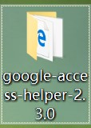
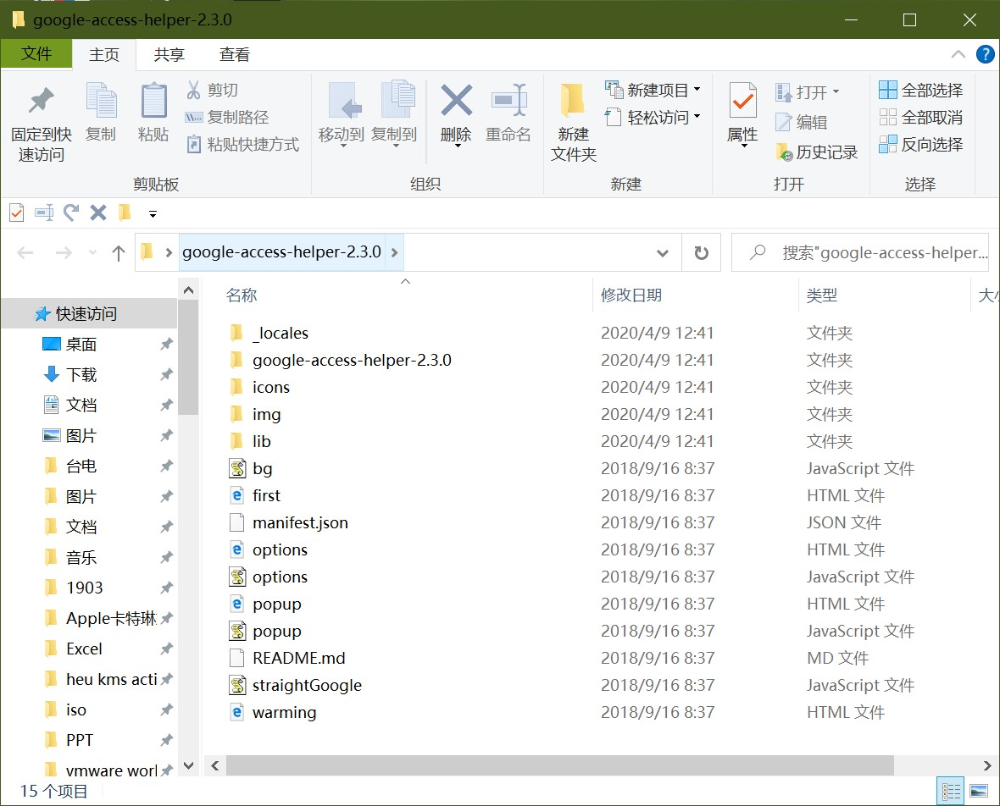
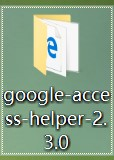
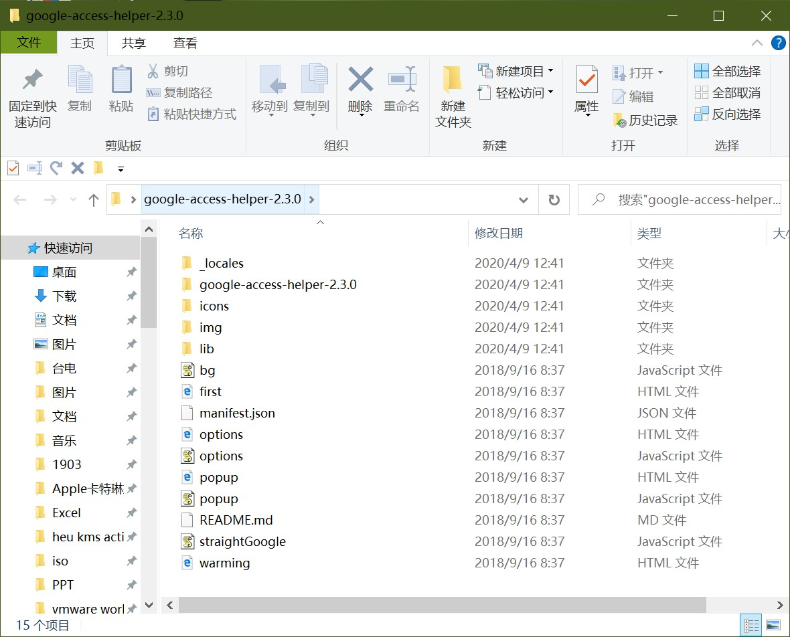
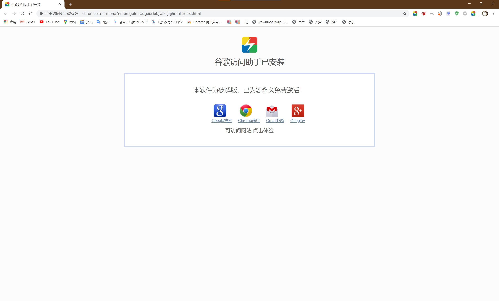

Google访问助手安装指南
首先下载Google访问助手，google-access-helper-2.3.0.zip并解压
 然后打开Google Chrome 左上角点三个点的按钮，更多工具>扩展程序
并打开开发者模式

Google访问助手安装指南首先下载Google访问助手，google-access-helper-2.3.0.zip并解压 然后打开Google Chrome 左上角点三个点的按钮，更多工具>扩展程序并打开开发者模式
点击“加载已解压的扩展程序”然后选择刚才下载的google-access-helper-2.3.0文件夹.注:没解压的要解压安装成功后会跳出来一个界面，如下图: |